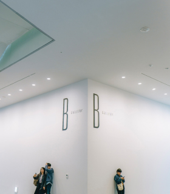

Российскую делегацию возглавлял замруководителя Федерального архивного агентства Андрей Юрасов. Регионы нашей страны представляли близкие к Монголии Иркутская область и Бурятия в лице министра культуры Соелмы Дагаевой, сообщает infpol.ru
Сотрудничество Монголии и России в архивном деле имеет давнюю историю. В 1992 году была создана монголо-российская комиссия по сотрудничеству в области архивов. За этим сухим названием стоят годы кропотливой работы. Подготовлено более 10 сборников. И один из них посвящен военному сотрудничеству. Прошли выставки, в том числе об истории монголо-российских отношений в 20 веке. Монгольские архивисты проходят стажировки в российских архивах.
— Завершается подготовка сборника об экономических отношениях Монголии и СССР с 1955 по 1985 годы. В будущем году мы представим его общественности, – пообещал руководитель российской делегации. - Ещё один сборник будет посвящен политическим связям с 1953 по 1964 год.
Андрей Юрасов курирует среди многих направлений отдел использования и международных связей. А также возглавляет комиссию по вопросам международного сотрудничества. Нынешнее уже 23-е заседание монголо-российской комиссии по сотрудничеству в области архивов неслучайно открылось в Эрдэнэте – городе, построенном еще при участии СССР. До 2016 года ГОК «Эрдэнэт» был совместным монголо-российским предприятием. И сейчас город и предприятие хранят следы советского прошлого. В этом году ГОК «Эрдэнэт» отметит свое 40-летие. Российская делегация отметила, что и для государственной архивной службы нашей страны этот год юбилейный – сто лет. Неудивительно, что за такой срок в архивы РФ поступило огромное количество ценных документов.
 Российскую делегацию возглавлял замруководителя Федерального архивного агентства Андрей Юрасов. © Фото: ТАСС
Российскую делегацию возглавлял замруководителя Федерального архивного агентства Андрей Юрасов. © Фото: ТАСС
 Российскую делегацию возглавлял замруководителя Федерального архивного агентства Андрей Юрасов. © Фото: ТАСС
Российскую делегацию возглавлял замруководителя Федерального архивного агентства Андрей Юрасов. © Фото: ТАСС
Российскую делегацию возглавлял замруководителя Федерального архивного агентства Андрей Юрасов. © Фото: ТАСС
Российскую делегацию возглавлял замруководителя Федерального архивного агентства Андрей Юрасов. © Фото: ТАСС
— Архивный фонд РФ насчитывает более 528 миллионов единиц хранения, – подчеркнул Юрасов в начале выступления, - и ежегодно фонд пополняется на 1,5 - 2 миллиона единиц хранения.
Он передал своему монгольскому коллеге, господину Хоролдамбе перечень документов о визитах первых правителей молодой Монгольской Реcпублики в СССР. Также Андрей Викторович пригласил молодых монгольских архивистов на стажировки и конференции по обмену опытом. В заключение первой части выступления Юрасов поблагодарил хозяев за государственные награды от Монголии российским архивистам.
Далее с докладами поочередно выступили монгольские и российские архивисты. Надо отметить, что почти все представители монгольской стороны говорили на безупречном русском языке, поскольку окончили российские вузы.
К юбилею битвы на Халхин-голе
Завершающий день работы комиссии прошел уже в столице Монголии. 22 июня утром прошла первая встреча в Министерстве обороны. Оказалось, что и в этом ведомстве ежегодно проходит монголо-российская комиссия по военно-техническому сотрудничеству. Центральный военный архив Монголии тоже содержит многолетние исторические документы.
Монгольский министр обороны Энхболд трижды встречался в этом году со своим российским коллегой Шойгу. В сентябре ожидается ответный визит в Монголию. Более 300 военнослужащих этой страны сегодня обучаются в России. Это лишь некоторые примеры активного сотрудничества.
Для Монголии Вторая мировая война началась 11 мая 1939 года на Халхин-Голе и завершилась 2 сентября 1945 года, когда советские и монгольские войска разбили дивизии Квантунской армии и Япония подписала акт о безоговорочной капитуляции.
В 2019 году планируется отметить юбилей нашей совместной победы на Халхин-Голе. Главный организатор торжеств - Министерство обороны Монголии. К этому юбилею выпустят новые материалы по источникам архивов.
Андрей Юрасов от имени российской делегации поблагодарил зам- министра обороны Монголии за теплый прием и пообещал, что будет переведён на монгольский язык сборник советских документов о Халхин-Голе. Более того, уникальные документы дополнят фотографиями и материалами о сотрудничестве монгольских и советских военных в конце Второй мировой войны.
В Министерстве обороны Монголии, в свою очередь, попросил содействия в поиске сведений о тех, кто воевал на Халхин-Голе, командовал полками и дивизиями. Далее гостям показали военный музей и его филиал – дом маршала Победы Георгия Жукова.

Российская делегация Федерального архивного агентства. © Фото: ТАСС
Силы сторон к началу боя
| Сторона | СССР | Монголия | Япония |
|---|---|---|---|
| Человек | 57 000 | 7 000 | 75 000 |
| Орудия и миномёты | 542 | 42 | 500 |
| Пулемётов | 542 | 42 | 500 |
| Танков | 498 | 98 | 182 |
| Бронемашин | 385 | 85 | - |
| Самолётов | 515 | 85 | 700 |
В кинематографе
- Халхин-Гол» (1940) — документальный фильм, ЦСДФ.
- «Слушайте, на той стороне» (1971) — советско-монгольский фильм.
- «Я, Шаповалов Т. П.» (1973, реж. Карелов Е. Е.) — первая часть дилогии «Высокое звание», эпизод в фильме..
- «Дорогами отцов» (2004) — телевизионный фильм иркутской тележурналистки Натальи Волиной, посвящён 65-летию окончания боёв на реке Халхин-Гол и советско-монгольской экспедиции по местам боевой славы.
- «Халхин-Гол. Неизвестная война» (2008) — документальный фильм, посвящён 70-летию победы на реке Халхин-Гол. В фильме использовано большое количество хроники, а также комментарии ветеранов-участников тех событий и историков.
- «Исторические хроники с Николаем Сванидзе» 1939 г.
- Мой путь (фильм, 2011) (кор. 마이웨이) — корейский кинофильм режиссёра Кан Джегю, вышедший на экраны в 2011 году. Фильм основан на истории корейца Ян Кёнджона и японца Тацуо Хасэгава, захваченных в плен Красной армией на Халхин-Голе.
Справка
Российская делегация побывала в доме, где с сентября 1939-го по май 1940-го жила семья Жукова. Сейчас это музей его имени, открывшийся в 1979 году, когда маршала уже не было в живых. Поэтому многие экспонаты музею подарили дочери Жукова, не раз приезжавшие в Монголию.
Этот монгольский музей – не просто единственный дом-музей маршала Советского Союза Георгия Константиновича Жукова за рубежом. В нем хранятся подлинные четыре Звезды Героя Советского Союза, которыми был награжден Жуков. Эти настоящие «Золотые Звезды» прислали к открытию музея из фондов Центрального музея Вооруженных Сил СССР.
Файлы для скачивания
Халхин-Гол» (1940) — документальный фильм, ЦСДФ.
PDF, 1.2Мб
«Я, Шаповалов Т. П.» (1973, реж. Карелов Е. Е.) — первая часть дилогии «Высокое звание», эпизод в фильме.
PDF, 1.2Мб
Халхин-Гол» (1940) — документальный фильм, ЦСДФ.
PDF, 1.2Мб
«Я, Шаповалов Т. П.» (1973, реж. Карелов Е. Е.) — первая часть дилогии «Высокое звание», эпизод в фильме.
PDF, 1.2Мб
История
Музеи
Монголия